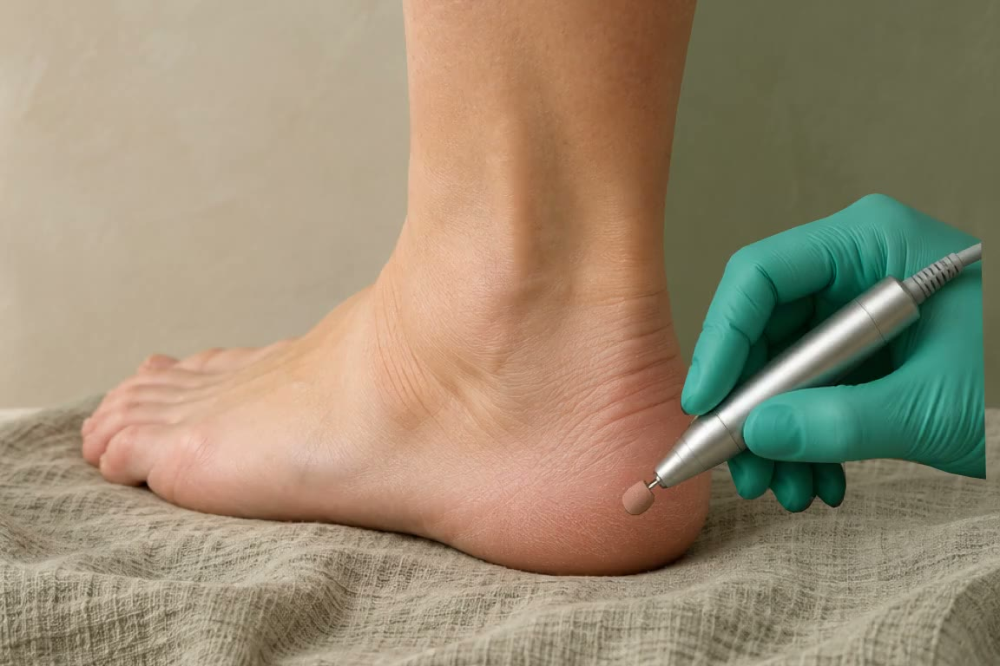

Подолог во Всеволожске
Забота
о стопах
Подологический педикюр и уход за ногтями у Марии Колесник.
Прокрутите для кругового обзораНа приёме
Услуги и цены

Мария осмотрит кожу и ногти, подберёт процедуру и объяснит каждый шаг.
Педикюр2 500–3 500 ₽
Профилактический аппаратный педикюр3 000 ₽
Аппаратная обработка десяти ногтевых пластин и кожи стоп.
Медицинский аппаратный педикюр3 500 ₽
Обработка ногтей и кожи стоп. Объём работы обсуждается на приёме.
Классический педикюр2 500 ₽
Обработка стоп и десяти ногтевых пластин.
Комбинированный педикюр3 000 ₽
Сочетание аппаратной и классической техники.
Уход за ногтями2 000–3 000 ₽
Аппаратный педикюр здоровых ногтей2 000 ₽
Обработка десяти ногтевых пластин без обработки стоп.
Аппаратная обработка ногтей средней сложности2 500 ₽
Обработка десяти ногтевых пластин без обработки стоп.
Аппаратная обработка ногтей высокой сложности3 000 ₽
Обработка десяти ногтевых пластин без обработки стоп.
Локальная обработка900–2 000 ₽
Обработка кожи двух стоп1 500 ₽
Обработка кожи обеих стоп без патологических изменений.
Обработка кожи с гиперкератозом и трещинами2 000 ₽
Обработка кожи стоп без обработки ногтей.
Обработка одной мозоли900 ₽
Стержневые, плоские и межпальцевые мозоли.
Обработка вросшего ногтя, 1 зона1 000 ₽
Обработка одного края ногтевой пластины.
Коррекция ногтей1 500–3 000 ₽
Нитиноловая нить на большом пальце3 000 ₽
Коррекция ногтевой пластины с помощью нитиноловой нити.
Нитиноловая нить на маленьком пальце1 500 ₽
Коррекция ногтевой пластины с помощью нитиноловой нити.
После приёма
Домашний
уход

Мария покажет, как наносить крем и ухаживать за стопами между визитами.
 PollylookПосмотреть средства для ухода
PollylookПосмотреть средства для ухода
О специалисте
Мария
Колесник

Дипломированный подолог с медицинским образованием по специальности «Сестринское дело».
Инструменты проходят трёхэтапную стерилизацию. Уход подбираю индивидуально по состоянию кожи стоп и ногтей.
Кабинет во Всеволожске
Запись
на приём
Напишите Марии, чтобы согласовать день и время визита.
+7 921 577-46-16Где и когда
Всеволожск, Октябрьский проспект, 90
10:00, 12:00, 14:00
08:00, 10:00, 12:00, 14:00, 16:00, 18:00, 20:00
Июль